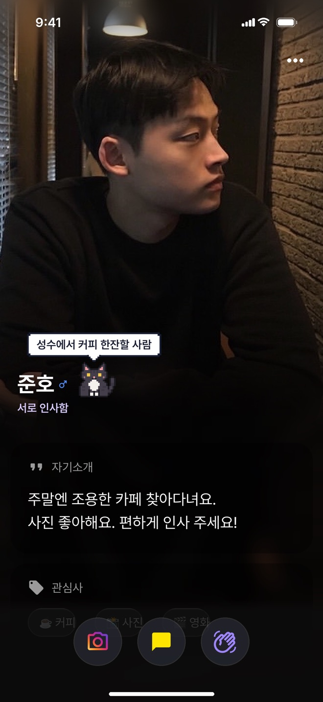
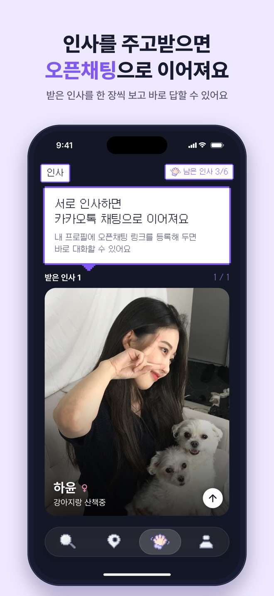
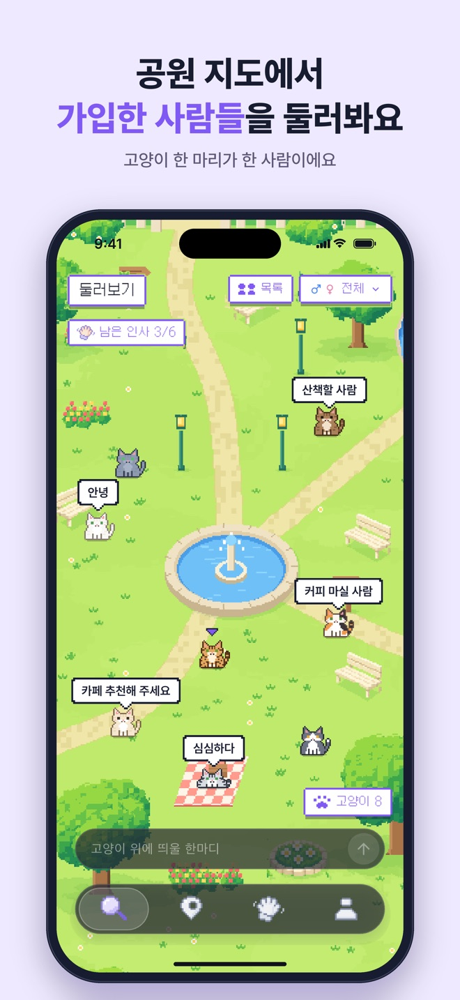
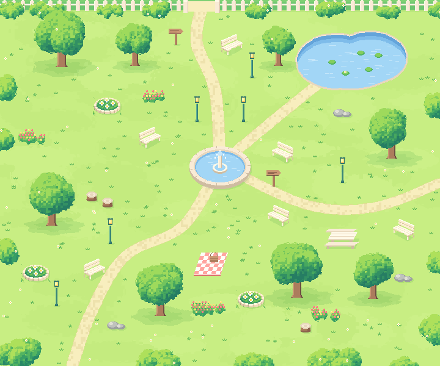
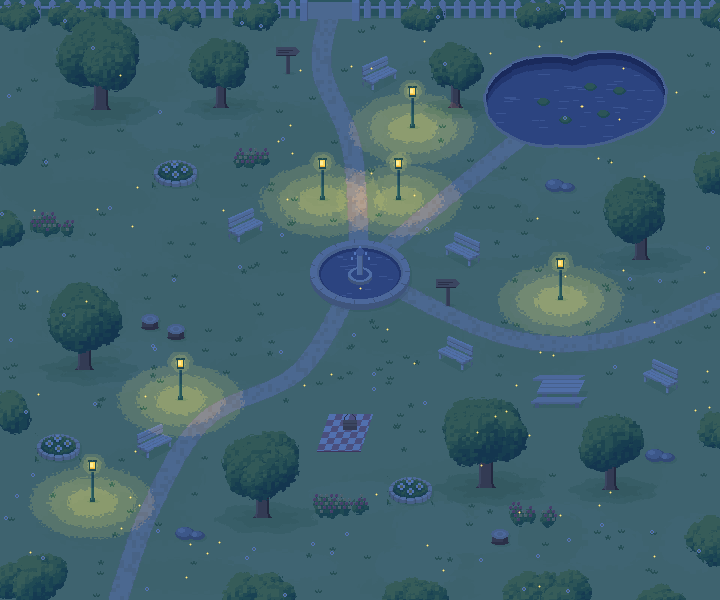

이용약관·개인정보처리방침이 2026년 12월 1일부터 바뀌어요. 변경 내용 보기
주변 사람의
SNS가 궁금할 때
가까이 있는 사람을 고양이 지도에서 발견하고, 인사를 주고받고, 마음이 맞으면 Instagram이나 오픈채팅으로 이어가요. 내 SNS도 알릴 수 있어요.
만 19세 이상iPhone모든 기능 무료한국어 · English · 日本語
어떻게 이어지나요?
발견하고, 인사하고,
대화로 이어가요.
- 01
발견하기
둘러보기는 지역과 관계없이 공개 프로필을 공원 지도에 보여줘요. 새로 가입했거나 말풍선을 바꾼 사람이 맨 앞에 와요. 주변 탭은 30km 안에서 지도에 자신을 표시(체크인)한 사람을 보여줘요.
- 02
알아보기
고양이를 누르면 사진, 말풍선, 자기소개, 관심사와 Instagram 아이디가 담긴 프로필이 열려요.
- 03
인사하기
마음에 들면 인사를 보내요. 하루 3번 보낼 수 있고, 짧은 광고를 끝까지 보면 하루 3번까지 더 보낼 수 있어요.
- 04
이어가기
서로 인사하면 상대가 등록한 카카오톡 오픈채팅이 열려요. Instagram 아이디는 언제든 눌러 이동할 수 있어요.

프로필에서 Instagram까지
서로 인사하면 오픈채팅으로
공원 지도에서 둘러보기
고양이 지도
지금 근처에 있다고
살짝 알려요.
‘지도에 나도 표시하기’로 올리면 3시간 동안 30km 안의 이용자 지도에 내 고양이가 나타나요. 말풍선은 써도 되고 안 써도 돼요. 정확한 위치 대신 10·20·30km 거리 구간으로만 보이고, 따로 동의한 경우에만 올라가며, 언제든 직접 내릴 수 있어요.
둘러보기 탭의 공원은 휴대폰 시계에 맞춰 아침, 오후, 저녁, 밤으로 바뀌어요.

아침- 저녁

밤
안전과 개인정보
내 정보는
내가 지켜요.
정확한 위치는 보이지 않아요.
위치는 저장하지 않아요. 주변보기를 볼 때와 체크인할 때만 약 100m 단위로 보내고, 체크인은 2km 칸만 3시간 남겨요. 좌표·주소·거리는 다른 이용자에게 공개하지 않아요.
위치 사용은 언제든 끌 수 있어요.
내 프로필에서 위치 사용을 끄면 체크인과 위치 이용 기록이 바로 삭제돼요. 꺼도 둘러보기는 이용할 수 있어요.
오픈채팅은 서로 인사한 사람에게만.
오픈채팅 링크는 선택해서 등록하고, 서로 인사한 사람에게만 보여요.
비공개·신고·차단을 지원해요.
프로필을 비공개로 하거나 상대를 차단하면 Instagram 아이디와 인사도 보이지 않아요. 신고는 24시간 안에 확인해요.
가까운 곳부터, 가볍게.
소개팅 앱이 아니에요. 매칭도 앱 안 채팅도 없이, 동네 사람의 SNS를 알아가는 곳이에요. 궁금한 점은 자주 묻는 질문에서 확인하거나 고객지원에 문의하세요.